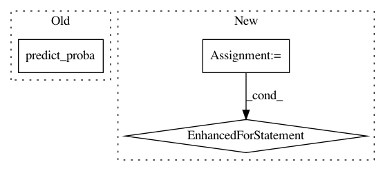

1e619d91956c813d2328a5460da0a273fe135905,hook/zmes_hook_helpers/face.py,Face,detect,#Face#Any#,123
Before Change
matched_face_rects = []
for idx,face_encoding in enumerate(face_encodings):
preds = self.svm_model.predict_proba([face_encoding])[0]
print (preds, self.svm_model.classes_)
best_pred_ndx = np.argmax(preds)
After Change
// Use the KNN model to find the best matches for the test face
closest_distances = self.knn.kneighbors(face_encodings, n_neighbors=1)
are_matches = [closest_distances[0][i][0] <= g.config["face_recog_dist_threshold"] for i in range(len(face_locations))]
matched_face_names = []
matched_face_rects = []
for pred, loc, rec in zip(self.knn.predict(face_encodings), face_locations, are_matches):
label = pred if rec else g.config["unknown_face_name"]
matched_face_rects.append((loc[3], loc[0], loc[1], loc[2]))
matched_face_names.append(label)
conf.append(1)
return matched_face_rects, matched_face_names, conf
In pattern: SUPERPATTERN
Frequency: 4
Non-data size: 3
Instances
Project Name: pliablepixels/zmeventnotification
Commit Name: 1e619d91956c813d2328a5460da0a273fe135905
Time: 2019-11-15
Author: pliablepixels@gmail.com
File Name: hook/zmes_hook_helpers/face.py
Class Name: Face
Method Name: detect
Project Name: dnouri/skorch
Commit Name: bf4c6ed262d13c89247406f7009e1c8c06939ce1
Time: 2017-11-17
Author: marian.tietz@ottogroup.com
File Name: skorch/net.py
Class Name: NeuralNet
Method Name: predict
Project Name: rtavenar/tslearn
Commit Name: 7ea8c3e6d162ef47fbcfcb6621ff7633d91ae61d
Time: 2020-04-16
Author: francois-33
File Name: tslearn/early_classification.py
Class Name: NonMyopicEarlyClassification
Method Name: _predict_single_series
Project Name: ClimbsRocks/auto_ml
Commit Name: d4e6fa0d36d14fba71a0a05b72657cc9d482bc21
Time: 2016-08-14
Author: ClimbsBytes@gmail.com
File Name: test_script.py
Class Name:
Method Name: